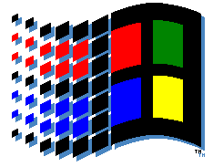

|

|
Microsoft Windows 95/98
Shareware, Freeware en
Public Domain Software
|
Update: 18 april 2000
Op het Internet is veel software te vinden voor Windows.
Zoek in de archieven en vind Shareware, Freeware en
Public Domain programma's waarvan je nooit wist
dat je ze nodig had.
Deze pagina is als volgt ingedeeld:
Wat betekent Shareware, Freeware en Public Domain?
- Shareware
- Programma's die je gratis kunt uitproberen voordat je ze
daadwerkelijk koopt (Try-Before-You-Buy).
Bevalt het programma, dan word je geacht het te registreren.
Je betaalt dan een vrij laag bedrag (enkele tientjes) aan
de schrijver van het programma.
Zie ook:
- Freeware
- Echt gratis of `vrije' software.
Er kan wel een licentie aan vast zitten.
Onder UNIX is vooral de
GNU General Public License befaamd.
- Public Domain
- Geheel vrijgegeven software.
Zelfs de auteur zou er geen aanspraak meer op kunnen maken.
Voor de Nederlandse wet geldt dit echter niet: een auteur blijft altijd
het auteursrecht behouden.
Aan de andere kant geldt dit ook voor de produktaansprakelijkheid!
Archieven
De meeste software voor de PC is shareware.
Dit zijn de belangrijkste archieven:
Windows 95/98 FTP-sites
-
FUNET's Simtel Windows 95 Archive FTP mirror
- FUNET heeft een mirror van de SimTel-archieven, met
erg veel Windows-software.
-
Microsoft Software Library
- Microsoft's software bibliotheek met hulpprogramma's en update's.
Zie de
index voor de inhoud.
-
FTP search v3.5
- Zoek naar files uit honderden FTP-sites.
Windows 95/98 websites
-
Microsoft
Windows 95 en
Windows 98 homepage
- Microsoft's eigen Windows homepage.
Er is ook een
Nederlandse Windows pagina en een pagina met
Nederlandstalige componenten.
-
Download.com
- Het zusje van shareware.com.
De lijst
met de laatste software is erg handig.
Met de Power Search
kan op veel criteria gezocht worden.
-
Shareware.com
- Database van de grootste software-archieven van het Internet.
Het archief kan uitgebreid doorzocht worden met een zoekmotor.
-
ZD Net Software Library
- Een erg uitgebreid software archief.
Er is onder andere een lijst te vinden met de
laatste shareware.
Natuurlijk heeft ZD Net ook een Power Search.
-
32bit.com - The 32 bit OS center
- Pagina met informatie, links naar shareware, nieuws
en discussie fora.
-
WINHQ
- Pagina's met veel informatie en goede shareware-lijsten.
-
NoNags main page
- Op deze pagina alleen freeware! Alleen volledig-functionerende
programma's waarvoor geen cent betaald hoeft te worden.
Selecties
De maker van deze pagina heeft al veel shareware uitgeprobeerd.
De beste programma's staan hieronder.
Applicaties
De volgende programma's maken een computer echt nuttig.
-
Paint Shop Pro 5.01 (7,3M)
- Een erg goed programma om plaatjes te bewerken.
Je kunt er mee tekenen, maar bijvoorbeeld ook converteren, kleuren aanpassen
of verschillende effecten uitvoeren.
Bezoek JASC voor meer informatie.
-
GoldWave 3.22 (466k)
- Aardig programmaatje om geluidssamples mee te bewerken.
-
Pretty Good Privacy 5.5.3i (2,2M)
- Pretty Good Privacy (PGP) is een programma waarmee bestanden
zeer goed versleuteld kunnen worden.
In tegenstelling tot eerdere versies is deze versie een volwaardig
Windows-programma. Meer informatie over deze internationale versie is
te vinden op de International PGP homepage.
-
WinAmp 2.03 (495k)
- WinAmp is een programma om MPEG Layer 3 (MP3) geluidsbestanden mee af te spelen.
Deze bestanden zijn sterk gecomprimeerd (ongeveer 9% van de oorspronkelijke grootte)
maar zijn toch amper van CD-kwaliteit te onderscheiden.
Meer info op de WinAmp site.
Internet programma's
Wat gisteren nieuwe was is morgen weer verouderd. Kijk hier voor de laatste versies.
-
Stroud's CWSApps List
- Hier vind je de beste en laatste WinSockets-programma's,
programma's voor het Internet.
Een andere goede collectie van Internet-programma's is te vinden in
The Ultimate Collection of Winsock Software (TUCOWS).
-
Eudora Light 3.05 (4486k)
- Nog steeds het beste mail-programma.
En het mooiste is: de light-versie met iets minder functies
kost geen cent. Meer info over onder andere Eudora Pro 4.0 is
te vinden op de Eudora homepage.
-
Netscape Communicator 4.5 (complete install) (14,6M)
- Het programma dat het Internet heeft groot gemaakt en volgens velen nog steeds de beste browser.
Meer informatie over dit programma is te vinden op de Netscape homepage.
-
Microsoft Internet Explorer 4.0 Nederlands (setup, 442 k)
- Microsoft's eigen webbrowser met Active Desktop integratie.
Bezitters van een Engelstalige Windows dienen de Engelstalige versie te downloaden.
Zie ook de IE 4.0 homepage.
-
Net Vampire 2.4 (1150k)
- Eigenlijk hoort dit programma bovenaan deze pagina te staan.
Hij is namelijk ideaal om bestanden mee te downloaden.
Het mooiste is de resume-optie: na het afbreken van een download
gaat 'ie de volgende keer verder waar 'ie gebleven was.
Meer info op de
Net Vampire homepage.
-
QVT/Term 4.1.5 (1517k)
- Windows 95 heeft zelf een telnet aan boord, maar die kun je beter
onberoerd laten staan. QVT/Term werkt makkelijker en is veel stabieler.
Deze en andere Internet-programma's zijn te vinden bij QPC Software.
Hieronder staan plug-ins die in Communicator (Navigator) en Internet Explorer
werken. Netscape-gebruikers kunnen onder about:plugins
zien welke plug-ins (en welke versies) geïnstalleerd zijn.
-
RealPlayer 5.0 (1407k)
- Browser plug-in voor streaming geluid en video: het geluid en video wordt afgespeeld terwijl het gedownload wordt.
Meer informatie over de plug-in is te vinden op de RealNetworks homepage.
-
ShockWave 7.0 (939k)
- Installeer deze plug-in en je browser kan interactieve Flash en Director 'movies' afspelen.
Zie de Macromedia homepage voor meer informatie.
-
Cosmo Player 2.0 plug-in (3,1M)
- Met deze plug-in van Silicon Graphics kun je door drie-dimensionale VRML-werelden rondlopen.
Voor MPG, AVI, AIFF en QuickTime-ondersteuning kun je ook
ActiveMovie 1.0 (1033K) downloaden.
Zie voor meer info de Cosmo homepage.
Utilities
Gemak dient de mens (en de computer).
-
TextPad 3.1 (1243k)
- Een erg krachtige editor met o.a. een goede zoek en vervang-functie.
Woordenboeken (o.a. Nederlands en Engels)
voor de ingebouwde spellingschecker zijn via de
TextPad download-pagina
beschikbaar.
Zie voor meer informatie de TextPad Home Page.
-
WinNc 2000 (2,1M)
- Een van de meest verschrikkelijke programma's dat met Windows 95 werd
geïntroduceerd is de verkenner. Veel mensen kunnen er maar niet aan
wennen en verlangen terug naar bestandsbeheer van Windows 3.1 of zelfs
Norton Commander van MS-DOS.
Voor deze mensen is er nu het Nederlandstalige WinNc: een bestandsbeheer programma
met erg veel mogelijkheden. Kijk op de WinNc-homepage
voor meer informatie.
-
TextPrint (70k) 16 bit
- Met dit programmaatje kun je tekstbestanden uitprinten met
verschillende mogelijkheden, zoals het instellen van de kaders.
De mooiste mogelijkheid is wel dat twee of zelfs vier pagina's op één
blaadje geprint kunnen worden. Scheelt een hoop papier.
-
WinZip 6.3 (692k)
- Gebruiksvriendelijke unzipper.
Zie voor de nieuwste versie de WinZip Home Page.
-
McAfee VirusScan 3.20 (4,7M)
- Dit programma speurt in je computer naar virussen en ontsmet je
computer als dat nodig is.
Het programma wordt geregeld vernieuwd.
Bekijk de directory
voor de laatste versie.
Meer informatie is te vinden in de
McAfee VirusScan pagina.
-
TransMac 2.1U (201k) 16 bit
- Een klein wondertje: lees Macintosh-floppies op de PC.
-
XferPro32 2.0 (792k)
- Bestanden op het Internet zijn soms op de vreemdste manieren
gecodeerd. Xferpro kan de meest voorkomende aan, waaronder
uuencode, xxencode, MIME en BinHex.
Zie ook de homepage.
-
UNIX Utilities (673k)
- Gebruik UNIX commando's in plaats van Messy-dos.
-
FontLister 2.0 (208k)
- Met dit programma kun je op een eenvoudige manier een
overzicht krijgen van al je fonts.
Niet alleen van geïnstalleerde, maar ook van nog niet
geïnstalleerde fonts, wat vooral handig is als je een
font-CD-Rom bezit.
Bekijk ook de homepage.
-
GhostScript 4.0.3 (472k)
- Bekijk PostScript-bestanden op het beeldscherm en print ze uit op een niet-PostScript-printer!
Je kunt ook de
configuratiebestanden (678k)
downloaden en als je niet alleen plaatjes,
maar ook tekst wilt bekijken, heb je ook de
GhostScript fonts (1143k) nodig. Gebruik
GhostView 2.1 (1189k) om de bediening te vereenvoudigen.
Zie de Ghostscript homepage voor de laatste versies.
System updates
-
32-bit Hardware Drivers Collection
- Een van de voordelen van een Internetaansluiting is de
beschikbaarheid van de laatste drivers en software upgrades.
Zoek je een bedrijf dat niet in deze lijst staat, kijk dan
eens in de lijst met
Computer and Communication Companies.
-
DirectX 6.1 (6,8M)
-
DirectX bevat video- en geluidsdrivers die de hardware goed benutten zonder dat
de programma's hoeven te weten om welke hardware het precies gaat.
Het wordt voornamelijk gebruikt in spellen.
Meer informatie is te vinden op de DirectX-pagina.
System updates voor Windows 95
OSR2, Windows 98? Zelfs als je deze nog niet bezit kun je
toch al een heel eind komen met onderstaande updates.
-
OSR 2 downloads
- OSR 2 is de laatste versie van Windows 95 met een paar verbeteringen.
Helaas wordt deze versie alleen op voor-geïnstalleerde computers verkocht.
Veel vernieuwingen zijn echter via de OSR 2 downloads-pagina te downloaden,
Bijvoorbeeld de nieuwe
Dial-up Networking Update 1.2
voor het inbellen. Veel andere OSR2-updates vind je hieronder.
-
Windows 95 Service Pack 1 Nederlands (1333k)
- Deze Service Pack (OSR1) repareert een paar kleine foutjes in het Windows 95 besturingssysteem.
Welke dat zijn kun je lezen in de informatiepagina.
Gebruikers van de Engelse Windows dienen de Engelse versie (1235k) te installeren.
-
Winsock update 1.1 (155k)
- Helaas is Windows 95 niet zo goed beveiligd tegen aanvallen van buitenaf (zoals het Internet).
Deze update repareert een paar gaten in de beveiliging en maakt Windows imuun voor onder andere
Win-Nuke en Land Attack.
Als je veel van het Internet gebruik maakt is het wellicht handig om ook de
Win32 Kernel update (325k)
te downloaden. Deze repareert een geheugenlek dat problemen kan geven bij intensief Internet-gebruik.
-
OpenGL voor Windows 95 (495k)
- In tegenstelling tot DirectX is OpenGL onder meerdere besturingssystemen beschikbaar.
Daarom gebruiken sommige programma's OpenGL in plaats van DirectX voor de weergave van complexe afbeeldingen.
Zie de OpenGL voor Windows pagina
en de OpenGL homepage voor meer informatie.
-
Windows 95 font smoother (171k)
- Oorspronkelijk alleen in het Plus!-pakket, maar nu voor iedereen: de font smoother.
Door deze te installeren worden de wat grotere letters niet meer gekarteld weergegeven,
zodat onder andere webpagina's er veel mooier op worden.
Er is ook een Windows 95 font smoother-pagina.
-
Power Toys (231k)
- Een verzameling handige en grappige programmaatjes
van de programmeurs van Windows 95. Meer informatie en de mogelijkheid
de programmaatjes apart op te halen vind je op de
Power Toys homepage.
Diversen
Er zijn natuurlijk altijd programma's die niet in een van
de bovenstaande categoriën passen.
-
GameSpot
- Ook computerspelletjes worden als shareware
verspreid, waarvan sommige van een hoge kwaliteit zijn.
Een andere goede games-site is C|Net's Gamecenter.
-
Screen Saver Heaven
- Maak van je Personal Computer een Personal Computer en
kies de screensaver die het best bij je past.
-
RedSun: Font Pool
- Nog meer Truetype fonts die direct vanuit Windows te gebruiken zijn.
Kijk ook eens in het
TrueType fonts archive
en het FHT Fonts Centre.
Ook Microsoft stelt fonts ter beschikking die geoptimaliseerd zijn
voor gebruik in een webbrowser:
Core fonts for the World Wide Web.
Wil je graag een font met meerdere karaktersets?
Kijk dan eens naar Bitstream's Cyberbit font.
Heb je nog vragen? Dan kun je de
Windows FAQ eens proberen.
Edwin Martin
<edwin@bitstorm.org>